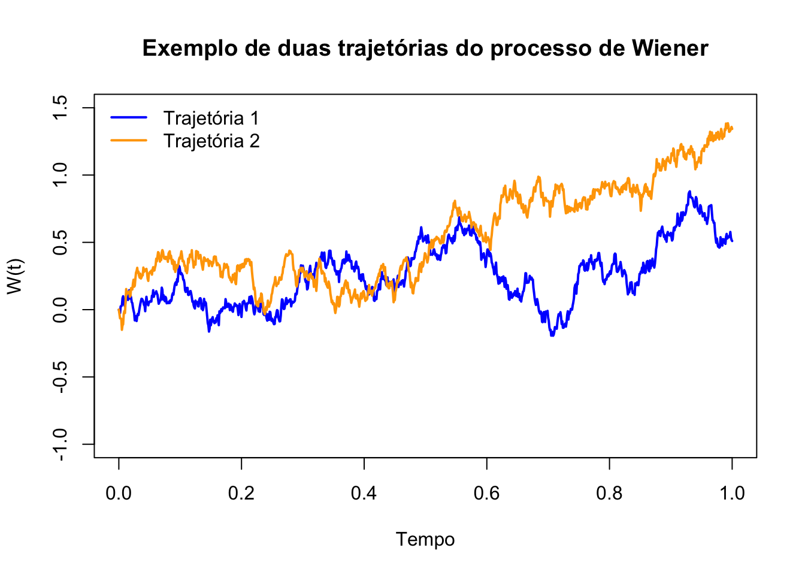

4 Complementos de processos estocásticos
4.1 Processo de Wiener
Definição 4.1 (Filtração) Seja \(X = (X(t), ~ t \in T)\) um processo estocástico definido no espaço de probabilidade \((\Omega, \mathcal{F}, P)\), com conjunto de índices \(T = [0, +\infty[\). Uma família de sub-\(\sigma\)-álgebras de \(\mathcal{F}\), tal que para \(s \leq t\) se tenha \(\mathcal{F}_s \subset \mathcal{F}_t\), designa-se por filtração.
Denomina-se filtração natural do processo \(X\) a família
\[
\left(\mathcal{F}_t = \sigma\big(X_s : 0 \leq s \leq t\big), \; t \in T\right),
\]
formada pelas álgebras-\(\sigma\) geradas pelo processo \(X\) até ao instante \(t\).
Um processo estocástico \(X = (X(t), ~ t \in T)\) está adaptado à filtração \((\mathcal{F}_t, t \in T)\) se, para todo \(t \in T\), a variável aleatória \(X(t)\) é \(\mathcal{F}_t\)-mensurável, isto é, as imagens inversas dos conjuntos \(B \in \mathcal{B}\) estão contidas em \(\mathcal{F}_t\).
\(\,\)
Em 1828, o botânico inglês Robert Brown observou pequenas partículas de pólen imersas num líquido a movimentarem-se de forma completamente aleatória. Mais tarde, em 1905, Albert Einstein justificou este movimento com a constante colisão entre as partículas e as moléculas do líquido envolvente e caracterizou-o por um processo estocástico que viria a ser chamado processo de Wiener. Finalmente, em 1918, apareceu a primeira definição matemática do termo através do matemático Norbert Wiener.m
\(\,\)
Definição 4.2 (Processo de Wiener padrão (ou movimento Browniano)) Um processo de Wiener padrão (ou movimento Browniano) é um processo estocástico \(W = (W_t)_{t \geq 0}\) definido num espaço de probabilidade \((\Omega, \mathcal{F}, P)\), que satisfaz as seguintes propriedades:
Condição inicial: \(W_0 = 0\) quase certamente, isto é,
\[ P(W_0 = 0) = 1; \]Incrementos gaussianos: Para quaisquer instantes \(0 \leq s < t < \infty\), a variável aleatória \(W_t - W_s\) é normalmente distribuída com média zero e variância \(t - s\), ou seja,
\[ W_t - W_s \sim \mathcal{N}(0, t - s); \]Incrementos independentes: Para todo \(n \in \mathbb{N}\) e qualquer sequência crescente de instantes \(0 \leq t_0 < t_1 < \dots < t_n\), os incrementos
\[ W_{t_1} - W_{t_0}, \; W_{t_2} - W_{t_1}, \; \dots, \; W_{t_n} - W_{t_{n-1}} \]
são variáveis aleatórias independentes;Trajetórias contínuas: Com probabilidade 1, a aplicação \(t \mapsto W_t(\omega)\) é contínua para todo \(\omega \in \Omega\), ou seja,
\[ P\left( W \in C([0, \infty[) \right) = 1, \]
onde \(C([0, \infty[)\) denota o espaço das funções contínuas em \([0, \infty[\).
\(\,\)
Nos processos estocásticos e, em particular, nas equações diferenciais estocásticas, o processo de Wiener representa o efeito acumulado das perturbações aleatórias na evolução de determinado fenómeno em estudo. Dada a importância deste processo, iremos apresentar algumas das suas propriedades.
\(\,\)
Definição 4.3 Considere-se uma função \(f:[0,t] \rightarrow \mathbb{R}\) e uma sequência de partições \(\mathcal{P}_n = \{t_0^n, t_1^n, \ldots, t_n^n\}\) do intervalo \([0,t]\), com \(0 = t_0^n < t_1^n < \cdots < t_n^n = t\) para cada \(n \in \mathbb{N}\), tais que \[ \delta_n = \max_{0 \leq i \leq n-1} |t_{i+1}^n - t_i^n| \to 0 \quad \text{quando } n \to +\infty. \]
A variação da função \(f\) no intervalo \([0,t]\) é definida por \[ V_f([0,t]) = V_f(t) := \lim_{n \to +\infty} \sum_{i=0}^{n-1} |f(t_{i+1}^n) - f(t_i^n)|. \]
Diz-se que \(f\) tem variação finita no intervalo \([0,t]\) se \(V_f(t) < +\infty\).
Diz-se que \(f\) tem variação limitada no intervalo \([0,t]\) se \[ \sup_{u \in [0,t]} V_f(u) < k, \quad \text{para algum } k > 0. \]
Diz-se que \(f\) tem variação quadrática no intervalo \([0,t]\) se existir e for finito o limite \[ V_f^2(t) := \lim_{n \to +\infty} \sum_{i=0}^{n-1} |f(t_{i+1}^n) - f(t_i^n)|^2. \]
\(\,\)
Propriedade 4.1 (Propriedades do processo de Wiener) O processo de Wiener, \(W_t\), possui as seguintes propriedades:
Existe uma versão separável e contínua do processo, isto é, com trajectórias quase certamente contínuas;
Para todo \(t \geq 0\), \(W_t \sim \mathcal{N}(0,t);\)
A função de covariância é dada por \(Cov[W_s, W_t] = E[W_s W_t] = s \wedge t;\)
\(W_t\) é um processo de Markov homogéneo;
A distribuição condicional de \(W_{s+\tau}\) dado \(W_s = x\) é Normal com média \(x\) e variância \(\tau\);
\(W_t\) é uma martingala em relação à sua filtração natural;
As trajectórias do processo de Wiener são, quase certamente, não diferenciáveis;
As trajectórias do processo de Wiener são, quase certamente, de variação ilimitada em qualquer intervalo;
Possui variação quadrática finita no intervalo \([a,b]\), igual a \(b-a\).
\(\,\)
Nota (Ruído branco como derivada generalizada do processo de Wiener). Embora as trajectórias do processo de Wiener sejam, quase certamente, contínuas mas não diferenciáveis (propriedade 7), e tenham variação total infinita (propriedade 8), é possível interpretar a sua derivada no sentido das distribuições generalizadas (ou distribuições de Schwartz).
Neste contexto, define-se a derivada generalizada do processo de Wiener como \[ \frac{dW_t}{dt} = \xi_t, \] onde \(\xi_t\) representa um processo estocástico generalizado, designado por ruído branco (ou white noise). Este processo não é uma função no sentido clássico, mas sim uma distribuição (ou funcional) que actua sobre funções teste suaves.
O ruído branco \(\xi_t\) caracteriza-se pelas seguintes propriedades formais:
- É um processo com média nula: \(E(\xi_t) = 0\);
- A sua função de autocovariância é dada por: \[ E(\xi_s \xi_t) = \delta(t - s), \] onde \(\delta\) é a função delta de Dirac, interpretada como distribuição.
Este formalismo é essencial na formulação de equações diferenciais estocásticas (EDEs), nas quais o ruído branco representa uma força aleatória infinitesimalmente perturbadora que actua continuamente ao longo do tempo.
\(\,\)
Na imagem seguinte apresentam-se duas trajectórias de um processo de Wiener. As trajectórias foram obtidas por simulação numérica, considerando incrementos independentes e normalmente distribuídos com média zero e variância proporcional ao incremento temporal.

\(\,\)
Exercício 4.1 (Braumann (2005)) Tirando partido das propriedades do processo de Wiener, calcule ou determine:
\(P(W(2.7) > 1.5)\).
\(P(-1.5 < W(2.7) < 1.5)\).
\(P(W(2.7) < 1.5 \mid W(1.8) = 1)\).
\(P(-1.5 < W(2.7) < 1.5 \mid W(1.8) = 1)\).
\(E(W(t) \mid W(s), W(u)) \quad \text{com } 0 < u < s < t\).
\(Var(W(t) \mid W(s), W(u)) \quad \text{com } 0 < u < s < t\).
\(P(W(2.7) > 1.5 \mid W(1.8) = 1,\, W(0.5) = -2)\).
\(E(W(2.7) \mid W(1.8) = 1,\, W(0.5) = -2)\).
\(P(W(1.8) < 1 \mid W(2.7) = 1.5)\).
\(P(W(1.8) = 1 \mid W(2.7) < 1.5)\).
\(P(W(2.7) = 1.5,\, W(1.8) > 1)\).
\(P(W(2.7) < 1.5,\, W(1.8) = 1)\).
\(P(-1 < W(2.7) - W(1.8) < 1.4 \;\wedge\; 0.5 < W(1.6) - W(0.9) < 1.5)\).
\(P(-1 < W(2.7) - W(1.8) < 1.4 \mid W(1.6) - W(0.9) = 1.5)\).
\(\,\)
Exercício 4.2
Considere um movimento Browniano standard \((B(t), ~t\geq 0)\) nos instantes \(0<u<u+v<u+v+w\), em que \(u,v,w>0\). Calcule \[ E(B(u)B(u+v)B(u+v+w)). \]
\(\,\)
Exercício 4.3
Seja \((B(t), ~t\geq 0)\) com \(B(0)\equiv 3\), um movimento Browniano com variância \(\sigma^{2}\). Determine \[ Cov(B(t),B(s)), \quad t,s \geq 0. \]
\(\,\)
Exercício 4.4
Considere um movimento Browniano standard \((B(t), ~t\geq 0)\). Determine as funções de covariância para os processos estocásticos seguintes:
\(U(t)=e^{-t}B(e^{2t})\), \(~t\geq 0\).
\(V(t)=(1-t)B\left(\dfrac{t}{1-t}\right)\), para \(0<t<1\).
\(W(t)=tB\left(\dfrac{1}{t}\right)\), com \(W(0)=0\).
\(\,\)
Exercício 4.5
Considere um movimento Browniano standard \((B(t), ~t \geq 0)\). Para \(t\) fixo e \(M(t)=\max\limits_{0\leq u\leq t}B(u)\), mostre que:
\(M(t)\) e \(\left| B(t)\right|\) têm a mesma distribuuição com f.d.p. \[ f_{M(t)}(x)=\frac{2}{\sqrt{t}}\phi (x/\sqrt{t}), ~ x>0. \]
\(E(M(t))=\sqrt{2t/\pi }\).
\(\,\)
Exercício 4.6
Sejam \(B_{1}(t)\) e \(B_{2}(t)\) dois movimentos Brownianos independentes e \(R(t)=\sqrt{B_{1}(u)^{2}+B_{2}(u)^{2}},\) \(t\geq 0\). Calcule \(E(R(t)).\)
\(\,\)
Exercício 4.7
As flutuações de preço das acções de determinada companhia são modeladas por um movimento Browniano \((A(t),\, t \geq 0)\). Suponha que a companhia entra em falência se o preço de mercado das acções atingir o nível zero.
Se o valor inicial das acções for \(A(0) = 5\) u.m., determine a probabilidade de …
… a companhia entrar em falência no instante \(t = 25\).
… as acções estarem acima de 10 unidades monetárias no instante \(t = 25\).
\(\,\)
Exercício 4.8
Considere um movimento Browniano com parâmetros \(\mu=0.1\) e \(\sigma =2\). Calcule a probabilidade do processo sair fora do intervalo \((a,b]\) no ponto \(b\), partindo de \(X(0)=0\), para \(b=1,10,100\) e \(a=-b\).
\(\,\)
Exercício 4.9
A flutuação do preço de determinado tipo de acções pode ser descrita por um movimento browniano geométrico com desvio-padrão \(\alpha = 0\). Supondo que adquire estas acções, quais são as hipóteses de ver o seu capital investido duplicar?
4.2 O integral de Itô
Nota. No que se segue, adoptámos a seguinte notação para esperança matemática e probabilidade condicionadas:
\[E(\cdot \mid X_s=x)=E_{s,x}(\cdot)\] e \[P(\cdot \mid X_s=x)=P_{s,x}(\cdot).\]
\(\,\)
Definição 4.4 (Processo de difusão) Seja \((\Omega,\mathcal{F},P)\) um espaço de probabilidade e \((X_t, t \geq 0)\) um processo estocástico definido nesse espaço. Diz-se que \(X_t\) é um processo de difusão se satisfizer as seguintes propriedades:
\(X_t\) é um processo de Markov;
As trajectórias de \(X_t\) são quase certamente contínuas;
\(X_t \in L^2\), isto é, \(E[X_t^2] < +\infty\);
Para todo \(\varepsilon > 0\), tem-se \[ \lim_{\Delta \to 0^+} \frac{P_{s,x}(|X_{s+\Delta} - X_s| > \varepsilon)}{\Delta} = 0; \]
Existe, e é finito, o limite \[ \lim_{\Delta \to 0^+} E_{s,x}\left[\frac{X_{s+\Delta} - X_s}{\Delta}\right] = a(s,x); \]
Existe, e é finito, o limite \[ \lim_{\Delta \to 0^+} E_{s,x}\left[\frac{(X_{s+\Delta} - X_s)^2}{\Delta}\right] = b(s,x). \]
Se as funções \(a(s,x)\) e \(b(s,x)\) forem independentes da variável temporal \(s\), o processo diz-se homogéneo.
As funções \(a(s,x)\) e \(b(s,x)\) designam-se, respectivamente, por coeficiente de tendência (ou momento infinitesimal de primeira ordem) e coeficiente de difusão (ou momento infinitesimal de segunda ordem).
O coeficiente de tendência, \(a(s,x)\), mede a velocidade da média do processo no instante \(s\), enquanto que o coeficiente de difusão, \(b(s,x)\), mede a intensidade das flutuações do processo, ou seja, mede a velocidade da variância do processo no instante \(s\).
Nota: Existem na literatura definições alternativas para processo de difusão, algumas das quais assumem hipóteses adicionais ou diferentes.
\(\,\)
Exercício 4.10 (Fonte: Braumann (2005))
Mostre que o processo de Wiener \(W_t\) é um processo de difusão homogéneo com coeficiente de tendência nulo e coeficiente de difusão unitário.
Mostre que \(X_t = x_0 + \sigma W_t\), com \(x_0\) e \(\sigma\) constantes, sendo um processo de Wiener (não-padrão), é um processo de difusão homogéneo com coeficiente de tendência nulo e coeficiente de difusão \(\sigma^2\).
Mostre que \(Z_t = x_0 + \mu t + \sigma W_t\), com \(x_0\), \(\mu\) e \(\sigma\) constantes, conhecido como movimento browniano com tendência, é um processo de difusão homogéneo com coeficiente de tendência \(\mu\) e coeficiente de difusão \(\sigma^2\).
\(\,\)
Definição 4.5 (Função delta de Dirac) Chama-se função delta de Dirac à função generalizada \(\delta(x)\) com as seguintes propriedades:
\(\delta(x) = 0\), para todo o \(x \neq 0\);
\(\delta(0) = +\infty\);
\(\displaystyle \int_{-\infty}^{+\infty} \delta(x)\,dx = 1\).
\(\,\)
A caraterização, do ponto de vista probabilístico, de um processo de difusão recorre apenas aos seus momentos infinitesimais e às equações de Kolmogorov.
\(\,\)
Teorema 4.1 Seja \(X_t\) um processo de difusão, como definido anteriormente, com função densidade de transição \(p(t, y \mid s, x)\), contínua em \(s\), com derivadas parciais de primeira e segunda ordem em relação a \(x\) finitas e contínuas em \(s\). Nessas condições, verificam-se:
Equação de Kolmogorov progressiva (ou equação de Fokker-Planck): \[ \frac{\partial p}{\partial t} + \frac{\partial\big(a(s,x)\,p\big)}{\partial y} - \frac{1}{2} \frac{\partial^2\big(b(s,x)\,p\big)}{\partial y^2} = 0, \] com condição inicial \[ \lim_{t \downarrow s} p(t, y \mid s, x) = \delta(x - y), \] onde \(\delta\) representa a função delta de Dirac, e \((s, x)\) está fixo;
Equação de Kolmogorov regressiva: \[ \frac{\partial p}{\partial s} + a(s,x)\,\frac{\partial p}{\partial x} + \frac{1}{2}\,b(s,x)\,\frac{\partial^2 p}{\partial x^2} = 0, \] com condição inicial \[ \lim_{t \uparrow s} p(t, y \mid s, x) = \delta(x - y), \] onde \(\delta\) representa a função delta de Dirac, e \((t, y)\) está fixo.
\(\,\)
Considere-se o ponto \(X(0) = X_0 \in \mathbb{R}\) e o seguinte problema de Cauchy, induzido por uma equação diferencial ordinária:
\[ \begin{cases} dX(t) = f(X(t))\,dt, & \text{para } t > 0, \\ X(0) = X_0, & \end{cases} \tag{4.1} \]
onde \(f: \mathbb{R} \rightarrow \mathbb{R}\) é uma função diferenciável, e \(X: \mathbb{R}_0^+ \rightarrow \mathbb{R}\) é a solução do problema (4.1).
Se interpretarmos \(X(t)\) como a trajectória de uma partícula, então \(dX(t)/dt\) representa a sua velocidade. É natural admitir que essa velocidade apresente pequenas oscilações que não são explicadas pela função \(f\), ou seja, o sistema descrito na equação (4.1) não incorpora o efeito aleatório que as flutuações ambientais induzem na trajectória de \(X\). Assim, torna-se necessário adicionar um ruído ao problema (4.1), de modo a reflectir a influência dessas flutuações sobre a dinâmica do sistema:
\[ \begin{cases} dX(t) = f(X(t))\,dt + g(X(t))\,\xi(t)\,dt, & \text{para } t > 0, \\ X(0) = X_0, & \end{cases} \tag{4.2} \]
onde \(g(\cdot)\), que mede a intensidade das flutuações ambientais, é uma função dependente de \(X(t)\).
Considerando que \(dW(t) = \xi(t)\,dt\), o sistema (4.2) pode reescrever-se da seguinte forma:
\[ \begin{cases} dX(t) = f(X(t))\,dt + g(X(t))\,dW(t), \\ X(0) = X_0, \end{cases} \]
o qual representa uma Equação Diferencial Estocástica (EDE). A solução deste sistema é dada por:
\[ X(t) = X_0 + \int_{0}^{t} f(X(s))\,ds + \int_{0}^{t} g(X(s))\,dW(s), \quad t > 0, \tag{4.3} \]
em que o primeiro integral é um integral de Riemann-Stieltjes. Contudo, o segundo integral não existe neste sentido, dado que as trajectórias do processo de Wiener são, quase certamente, de variação ilimitada no intervalo \([0,t]\).
No entanto, como o processo de Wiener possui variação quadrática finita, é possível definir o segundo integral recorrendo à definição de integral estocástico.
Note-se que, como já referido, se omitiu a dependência explícita em \(\omega\) na notação de \(X(t)\).
Mostraremos de seguida como obter a solução (4.3), bem como a definição do integral estocástico \[ \int_{0}^{t} g(X(s))\,dW(s). \]
\(\,\)
Suponhamos que desejamos calcular o seguinte integral:
\[ \int_{0}^{t} W(t)\,dW(t). \]
Se aplicarmos as regras de cálculo habituais, obtemos como solução:
\[ \frac{1}{2}W^2(t). \tag{4.4} \]
Vamos verificar se esta solução está correta.
Seja \(f:[0,t] \rightarrow \mathbb{R}^{+}\), com \(f(u) = W(u)\), uma função, e sejam \(\mathcal{P}_n = \{t_0^n, t_1^n, \ldots, t_n^n\}\), \(n = 1,2,\ldots\), partições do intervalo \([0,t]\) com
\[
0 = t_0^n < t_1^n < \ldots < t_n^n = t \geq 0,
\]
tais que os diâmetros
\[
\delta_n = \max_{0 \leq i \leq n-1} |t_{i+1}^n - t_i^n|
\]
satisfazem \(\delta_n \to 0\) quando \(n \to +\infty\).
Consideremos as somas de Riemann-Stieltjes aproximadoras do integral \(\int_{0}^{t} f(u)\,dW(u)\): \[ \sum_{i=0}^{n-1} W(\xi_i^n)\big(W(t_{i+1}^n) - W(t_i^n)\big), \] com \(\xi_i^n \in [t_i^n, t_{i+1}^n]\), e usemos limites em média quadrática quando \(n \to +\infty\) como possível definição do integral.
Consideremos o caso particular \(\xi_i^n = (1 - \lambda)t_i^n + \lambda t_{i+1}^n\), e definamos as somas de Riemann-Stieltjes:
\[ S_{\lambda}(W(t)) = \sum_{i=0}^{n-1} W(\xi_i^n)\big(W(t_{i+1}^n) - W(t_i^n)\big). \]
Facilmente verificamos que, para \(\lambda\) fixo, o limite em média quadrática destas somas, quando \(n \to +\infty\), é
\[ \frac{W^2(t)}{2} + \left(\lambda - \frac{1}{2}\right)t. \]
Com efeito:
\[ E\left[\left(S_{\lambda}(W(t)) - \frac{W^2(t)}{2} - \left(\lambda - \frac{1}{2}\right)t\right)^2\right] \longrightarrow 0. \]
Este limite depende da escolha do valor de \(\lambda\) e, consequentemente, do ponto intermédio \(\xi_i \in [t_i, t_{i+1}]\). Assim, não existe o integral no sentido de Riemann-Stieltjes, pois falha a existência de um limite comum para todas as escolhas de pontos intermédios.
Ao fixarmos \(\lambda = 0\), obtemos como ponto intermédio o ponto inicial do intervalo, isto é, \(\xi_i = t_i\), e verificamos que
\[ \int_{0}^{t} W(t)\,dW(t) = \frac{1}{2}W^2(t) - \frac{1}{2}t, \]
o que é um resultado diferente do indicado em (4.4). De facto, para diferentes valores de \(\lambda\), obtemos diferentes integrais. Por exemplo, se considerarmos \(\lambda = \frac{1}{2}\), o resultado do integral é:
\[ \int_{0}^{t} W(t)\,dW(t) = \frac{1}{2}W^2(t). \]
O facto de diferentes valores de \(\lambda\) implicarem diferentes integrais levanta uma questão pertinente: qual o valor de \(\lambda\) que devemos escolher?
A escolha de \(\xi_i = t_i\), ou seja, o ponto inicial, permite-nos definir integrais de funções mais gerais do que apenas o processo de Wiener. Isto conduz a integrais do tipo:
\[ \int_{0}^{t} G(s)\,dW(s), \]
onde \(G\) pertence a uma vasta classe de funções com a propriedade de serem não-antecipativas. Veremos mais à frente como definir rigorosamente estas funções.
Como se referiu, a escolha de \(\lambda\) permite obter diferentes integrais. Assim:
Se \(\lambda = 0\), escolhemos o ponto inicial do intervalo e obtemos o integral de Itô;
Se \(\lambda = \frac{1}{2}\), escolhemos o ponto intermédio do intervalo e obtemos o integral de Stratonovich.
\(\,\)
Vamos agora dedicar-nos ao estudo do integral de Itô. Começamos com a introdução de algumas definições e resultados importantes.
\(\,\)
Definição 4.6 Seja \(W(t),\ t \geq 0\), um processo de Wiener padrão definido num espaço de probabilidade \((\Omega, \mathcal{F}, P)\).
Chama-se filtração natural do processo de Wiener até ao instante \(s > 0\) à \(\sigma\)-álgebra \[ \mathcal{M}_s = \sigma(W(u),\ 0 \leq u \leq s); \]
Chama-se \(\sigma\)-álgebra dos incrementos futuros do processo de Wiener à \(\sigma\)-álgebra \[ \mathcal{M}_s^+ = \sigma(W(u) - W(s),\ u \geq s); \]
Uma família \(\{ \mathcal{A}_s : 0 \leq s \leq t \}\) de \(\sigma\)-álgebras é chamada filtração não-antecipativa, relativamente a \(W(s)\), se:
\(\mathcal{A}_s \supset \mathcal{M}_s,\quad 0 \leq s \leq t;\)
\(\mathcal{A}_s\) é independente de \(\mathcal{M}_s^+,\ \forall s \geq 0.\)
Informalmente, podemos dizer que a filtração \(\mathcal{A}_s\) contém toda a informação disponível do processo até ao instante \(s\).
A escolha da filtração não-antecipativa \(\mathcal{A}_s\) costuma coincidir com a própria filtração natural do processo de Wiener, \(\mathcal{M}_s\), desde que não seja necessário incluir informação adicional sobre o processo. Caso contrário, considera-se uma filtração maior (por exemplo, de modo a incluir a condição inicial de um problema de Cauchy), desde que a mesma seja não-antecipativa.
\(\,\)
Definição 4.7 (Processo não-antecipativo) Um processo estocástico \(G(t)\) é chamado de não-antecipativo, relativamente à filtração \(\mathcal{A}_t\), se \(G(t)\) é \(\mathcal{A}_t\)-mensurável, para todo \(t \geq 0\) (ou seja, \(G(t)\) depende apenas da informação disponível até ao instante \(t\)).
\(\,\)
Tendo em conta estas definições, podemos definir o integral de Itô para uma classe especial de funções não-antecipativas, as funções em escada. Nota: na realidade, para definir o integral de Itô, não basta que \(G\) seja não-antecipativa. É necessário que \(G = G(t,\omega)\) seja conjuntamente mensurável.
\(\,\)
Definição 4.8 (Espaço de Hilbert) Chama-se espaço de Hilbert, no intervalo \([0,t]\), e representa-se por \(H^2[0,t]\), ao espaço das funções \[ G:[0,t] \times \Omega \rightarrow \mathbb{R} \] que verificam as seguintes condições:
\(G\) é conjuntamente mensurável relativamente à medida de Lebesgue \(l\) em \([0,t]\) e à medida de probabilidade \(P\);
\(G\) é não-antecipativa;
\(\displaystyle \int_{0}^{t}{E[G^2(u,\omega)]\,du} < +\infty\).
\(\,\)
Nota. Nesta última definição considerámos, de modo abusivo, uma qualquer função \(G\) com a propriedade de ser conjuntamente mensurável relativamente às medidas \(l\) e \(P\).
Formalmente, deveríamos referir-nos ao conjunto das funções conjuntamente mensuráveis que sejam quase iguais, no seguinte sentido: duas funções \(G_1\) e \(G_2\) dizem-se quase iguais quando o conjunto de pontos \((t,\omega)\) onde diferem tem medida nula relativamente à medida produto \(l \times P\).
Assim, a função \(G\) é, na realidade, um representante da classe de equivalência das funções conjuntamente mensuráveis relativamente à relação de equivalência de quase-igualdade.
Deste modo, para simplificar a linguagem, referimo-nos à função \(G\) como um representante da classe de equivalência, em vez de referir explicitamente a própria classe de equivalência.
\(\,\)
Definição 4.9 (Função em escada) Uma função \(G\), no espaço \(H^2[0,t]\), é chamada de função em escada se existir uma partição \(\{0 = t_0 < t_1 < \ldots < t_n = t\}\) do intervalo \([0,t]\) tal que:
\[ G(t) = G(t_i), \hspace{20pt} t_i \leq t \leq t_{i+1}, \hspace{5pt} i = 0, \ldots, n-1. \]
Note-se que \(G(t_i)\) é \(\mathcal{A}_{t_i}\)-mensurável, pois \(G\) é não-antecipativa.
Ao espaço de funções em escada de \(H^2[0,t]\), chamamos \(H_E^2[0,t]\).
\(\,\)
Definição 4.10 (Integral de Itô para funções em escada) Seja \(G\) uma função em \(H_E^2[0,t]\). O integral de Itô da função \(G\) no intervalo \([0,t]\) é dado por:
\[ \int_0^t G(s) \, dW(s) = \sum_{i=0}^{n-1} G(t_i)\left(W(t_{i+1}) - W(t_i)\right). \]
\(\,\)
Teorema 4.2 (Propriedades do integral de Itô) Sejam \(F\) e \(G\) duas funções em \(H_E^2[0,t]\), e \(\alpha, \beta \in \mathbb{R}\) duas constantes. Verificam-se as seguintes propriedades:
Linearidade: \[ \int_0^t \left(\alpha F(s) + \beta G(s)\right) \, dW(s) = \alpha \int_0^t F(s) \, dW(s) + \beta \int_0^t G(s) \, dW(s); \]
Esperança nula: \[ E\left[\int_0^t F(s) \, dW(s)\right] = 0; \]
Isometria de Itô: \[ E\left[\left(\int_0^t F(s) \, dW(s)\right)^2\right] = E\left[\int_0^t \left(F(s)\right)^2 \, ds\right] = \int_0^t E\left[\left(F(s)\right)^2\right] \, ds. \]
\(\,\)
Definimos, assim, o integral de Itô para funções em escada, ou seja, funções no espaço \(H_E^2[0,t]\). Vamos agora generalizar este integral para funções genéricas em \(H^2[0,t]\), através da existência de sucessões aproximadoras de funções em escada.
\(\,\)
Teorema 4.3 (Aproximação em média quadrática) Seja \(G \in H^2[0,t]\) uma função. Então, existe uma sucessão de funções limitadas em escada, \(G_n \in H_E^2[0,t]\), tal que:
\[ E\left[\int_0^t |G(s) - G_n(s)|^2 \, ds\right] \xrightarrow{m.q.} 0, \quad n \rightarrow +\infty. \]
\(\,\)
Definição 4.11 Sejam \(G\) e \(G_n\) como no teorema anterior. O integral de Itô da função \(G\) no intervalo \([0,t]\) é definido como:
\[ \int_0^t G(s) \, dW(s) = \lim_{n \to +\infty} \int_0^t G_n(s) \, dW(s), \]
onde o limite é tomado em média quadrática.
\(\,\)
Teorema 4.4 (Propriedades do integral de Itô) Sejam \(F\) e \(G\) duas funções em \(H^2[0,t]\), e \(\alpha, \beta \in \mathbb{R}\) duas constantes. Verificam-se as seguintes propriedades:
Linearidade:
\[ \int_0^t \left( \alpha F(s) + \beta G(s) \right) \, dW(s) = \alpha \int_0^t F(s) \, dW(s) + \beta \int_0^t G(s) \, dW(s). \]
Esperança nula:
\[ E\left[\int_0^t F(s) \, dW(s)\right] = 0. \]
Isometria de Itô:
\[ E\left[\left(\int_0^t F(s) \, dW(s)\right)^2\right] = E\left[\int_0^t F(s)^2 \, ds\right] = \int_0^t E\left[F(s)^2\right] \, ds. \]
Covariância:
\[ E\left[\int_0^t F(s) \, dW(s) \int_0^t G(s) \, dW(s)\right] = E\left[\int_0^t F(s) G(s) \, ds\right]. \]
Distribuição normal no caso determinístico (se \(G(s)\) for determinística):
\[ \int_0^t G(s) \, dW(s) \sim \mathcal{N} \left( 0, \int_0^t G^2(s) \, ds \right). \]
\(\,\)
O integral de Itô para funções no espaço \(H^2[0,t]\) pode ser estudado como função do seu limite superior, ou seja, como um integral indefinido.
A prova destas propriedades encontra-se fora do âmbito desta unidade curricular.
\(\,\)
Definição 4.12 (Integral indefinido de Itô) Seja \(G \in H^2[0,d]\) uma função, e \([0,d]\) um intervalo. O integral de Itô da função \(G\), considerando \(t\) como limite superior de integração, é dado por:
\[ Z(t) = \int_0^t G(s) \, dW(s) = \int_0^d G(s) \, I_{[0,t]}(s) \, dW(s). \]
\(\,\)
Teorema 4.5 Seja \(Z(t)\) o processo estocástico definido acima. São válidas as seguintes propriedades:
\(Z(t)\) é uma martingala relativamente à filtração \(\mathcal{A}_t\);
\(Z(t)\) possui uma versão contínua (com trajectórias quase certamente contínuas);
\(Z(t)\) tem incrementos não correlacionados.
\(\,\)
As classes de funções até aqui apresentadas são bastante simples. Na prática, interessa-nos estudar integrais de Itô em que a função \(G\) não pertence apenas ao espaço \(H^2[0,t]\), mas sim a uma classe mais ampla: o espaço \(M^2[0,t]\).
\(\,\)
Definição 4.13 Dizemos que \(G(s, \omega)\) é uma função no espaço \(M^2[0,t]\) se:
É conjuntamente mensurável;
É não-antecipativa em relação à filtração \(\mathcal{A}_s\);
O integral
\[ \int_0^t G^2(s) \, ds \]
existe e é finito quase certamente.
\(\,\)
Note-se que a exigência
\[ \int_0^t G^2(s) \, ds < +\infty \]
é mais fraca do que a condição exigida para o espaço \(H^2\). Assim, temos a inclusão:
\[ H^2[0,t] \subset M^2[0,t] \]
A extensão do integral de Itô a funções do espaço \(M^2[0,t]\) é feita de forma semelhante à aproximação por funções em escada em \(H_E^2[0,t]\), com a diferença de que a convergência requerida é mais fraca.
\(\,\)
Teorema 4.6 Seja \(G \in M^2[0,t]\). Então, existe uma sucessão de funções limitadas em escada \(G_n \in H_E^2[0,t]\) tal que:
\[ \int_0^t (G(s) - G_n(s))^2 \, ds \to 0 \quad \text{quase certamente}, \quad n \to +\infty \]
\(\,\)
Definição 4.14 Sejam \(G\) e \(G_n\) como no teorema anterior. O integral de Itô da função \(G\) no intervalo \([0,t]\) é definido por:
\[ \int_0^t G(s) \, dW(s) = P-\lim_{n \to +\infty} \int_0^t G_n(s) \, dW(s), \]
onde o limite é tomado em probabilidade.
\(\,\)
Nota (Nota sobre propriedades do integral). Dada a natureza das funções no espaço \(M^2[0,t]\), não existe garantia de que as propriedades clássicas do integral de Itô — tais como esperança nula, isometria, e covariância — se verifiquem, pois os respetivos momentos podem não existir.
\(\,\)
Finda a apresentação do integral de Itô, é agora necessário introduzir as regras de cálculo destes integrais: o chamado cálculo de Itô.
O cálculo de Itô difere do cálculo clássico devido à introdução de uma nova regra de diferenciação — a regra da cadeia de Itô. Apresentamos de seguida a definição de processo de Itô e o respetivo teorema de Itô, base fundamental do cálculo de integrais estocásticos.
\(\,\)
Definição 4.15 (Processo de Itô) Sejam:
\((W(t), t \geq 0)\) o processo de Wiener;
\(X_0\) uma variável aleatória \(\mathcal{A}_0\)-mensurável;
\(F\) uma função conjuntamente mensurável, adaptada à filtração \(\mathcal{A}_s\) e tal que
\[ \int_0^d |F(s)| \, ds < +\infty \quad \text{quase certamente}; \]
\(G \in M^2[0,d]\).
Define-se o processo de Itô no intervalo \(t \in [0,d]\) como:
\[ X(t) = X_0 + \int_0^t F(s) \, ds + \int_0^t G(s) \, dW(s). \]
Este processo pode também ser representado na forma diferencial:
\[ dX(t) = F(t) \, dt + G(t) \, dW(t). \]
\(\,\)
Teorema 4.7 (Teorema de Itô) Seja \(X(t,\omega)\) um processo de Itô como definido anteriormente, e seja \(Y(t) = h(t,X(t))\), onde \(h\), \(h_{t}(t,x)\) e \(h_{xx}(t,x)\) são funções contínuas. Então:
\(Y(t) = Y(t,\omega)\) é um processo de Itô com condição inicial \(Y_0 = h(0, X_0)\);
a forma diferencial de \(Y(t)\) é dada pela regra da cadeia de Itô:
\[ dY_t = \left(\frac{\partial h(t,X_t)}{\partial t} + \frac{\partial h(t,X_t)}{\partial x} F(t) + \frac{1}{2} \frac{\partial^2 h(t,X_t)}{\partial x^2} G^2(t)\right) dt + \frac{\partial h(t,X_t)}{\partial x} G(t) dW_t; \]
- a forma integral de \(Y(t)\) é dada por:
\[ Y_t = Y_0 + \int\limits_{0}^{t} \left( \frac{\partial h(s,X_s)}{\partial s} + \frac{\partial h(s,X_s)}{\partial x} F(s) + \frac{1}{2} \frac{\partial^2 h(s,X_s)}{\partial x^2} G^2(s) \right) ds + \int\limits_{0}^{t} \frac{\partial h(s,X_s)}{\partial x} G(s) dW_s. \]
\(\,\)
Finda a apresentação de definições, propriedades e teoremas relativos ao cálculo de Itô, podemos agora abordar a resolução de equações diferenciais estocásticas, ou seja, o cálculo das suas soluções. Começamos pela definição de solução de uma equação diferencial estocástica de Itô.
No que se segue, consideramos:
\(W = (W_t, ~ t \geq 0)\) é um processo de Wiener;
\(X_0\) é uma variável aleatória independente do processo de Wiener;
\(\mathcal{A}_t = \mathcal{F}(X_0, W_s), \ 0 \leq s \leq t\);
\(F, G\) duas funções definidas em \([0,T]\), conjuntamente mensuráveis, com \(T > 0\).
\(\,\)
Definição 4.16 (Solução de uma EDE de Itô) Um processo estocástico \(X_t\) é solução da equação diferencial estocástica de Itô
\[ \label{sol_ito} \begin{cases} dX_t = F(X_t, t) \, dt + G(X_t, t) \, dW_t, & \quad 0 \leq t \leq T \\ X(0) = X_0, & \end{cases} \]
se satisfizer as seguintes condições:
\(X\) é \(\mathcal{F}_t\)-mensurável;
\(F\) é não-antecipativa e \[\int_{0}^{T} F(X_s, s) \, ds < +\infty;\]
\(G\) é não-antecipativa e \[\int_{0}^{T} G^2(X_s, s) \, ds < +\infty;\]
\[ X_t = X_0 + \int_{0}^{t} F(X_s, s) \, ds + \int_{0}^{t} G(X_s, s) \, dW_s \hspace{10pt} q.c., \quad \forall t \in [0, T]. \]
\(\,\)
Teorema 4.8 (Teorema de existência e unicidade de soluções de EDE de Itô) Sejam \(F:\mathbb{R} \times [0,T] \rightarrow \mathbb{R}\) e \(G:\mathbb{R} \times [0,T] \rightarrow \mathbb{R}\) duas funções contínuas que satisfazem as seguintes condições:
\(|F(x,t) - F(y,t)| \leq L |x - y|\) e \(|G(x,t) - G(y,t)| \leq L |x - y|\), para todo o \(t \in [0,T]\) e \(x, y \in \mathbb{R}\);
\(|F(x,t)| \leq L(1 + |x|)\) e \(|G(x,t)| \leq L(1 + |x|)\), para todo o \(t \in [0,T]\) e \(x \in \mathbb{R}\),
onde \(L > 0\) é uma constante.
Seja \(X_0\) uma variável aleatória, independente dos incrementos futuros do processo de Wiener, tal que
\[ E(|X_0|^2) < +\infty. \]
Nestas condições, existe uma única solução \(X_t\) da equação diferencial estocástica de Itô:
\[ \begin{cases} dX_t = F(X_t, t)\,dt + G(X_t, t)\,dW_t, & 0 \leq t \leq T \\ X(0) = X_0. & \end{cases} \tag{4.5} \]
\(\,\)
Esta solução é um processo de Markov e, se \(F\) e \(G\) forem contínuas em \(t\), trata-se também de um processo de difusão.
A unicidade enunciada significa o seguinte: se \(X_t\) e \(Y_t\) forem soluções da equação (4.5), então
\[ P(X_t = Y_t) = 1, \quad \forall t \in [0, T]. \]
As condições impostas às funções \(F\) e \(G\) correspondem, respetivamente, a uma condição de Lipschitz (continuidade uniforme) e a uma restrição de crescimento linear.
A demonstração deste teorema recorre ao Lema de Gronwall e pode ser encontrada em qualquer bom livro sobre equações diferenciais estocásticas.
\(\,\)
Exercício 4.11 (Fonte: Braumann (2005)) Determine \(d(tW(t))\) e utilize o resultado para mostrar que \[ \int_0^t s \, dW(s) = tW(t) - \int_0^t W(s)\, ds. \]
\(\,\)
Exercício 4.12 (Fonte: Braumann (2005)) Mostre que a equação \(dY(t) = Y(t)\, dW(t)\), com \(Y(0) = 1\), tem como solução \[ Y(t) = \exp\left(W(t) - \frac{t}{2}\right), \quad \text{para } t \geq 0. \]
\(\,\)
Exercício 4.13 Considere a seguinte EDE: \[ dY(t) = \mu\,dt + \sigma\,dW(t), \quad Y(0) = y_0. \] Mostre que a sua solução é dada por: \[ Y(t) = y_0 + \mu t + \sigma W(t). \] Sugestão: esta EDE é linear com coeficientes constantes. Resolva-a diretamente por integração.
\(\,\)
Exercício 4.14 Considere a seguinte EDE, conhecida como modelo de Ornstein-Uhlenbeck: \[ dX(t) = -\theta X(t)\,dt + \sigma\,dW(t), \quad X(0) = x_0. \] Mostre que a solução deste modelo é dada por: \[ X(t) = x_0 e^{-\theta t} + \sigma \int_0^t e^{-\theta (t-s)}\,dW(s). \] Sugestão: aplique a mudança de variável \(Z(t) = e^{\theta t} X(t)\) e resolva a EDE resultante.
\(\,\)
Exercício 4.15 Considere a seguinte EDE, conhecida como modelo de Vasicek: \[ dY(t)=b(A-Y(t))\,dt + \sigma\,dW(t), \quad Y(0)=y_0. \] Mostre que a solução deste modelo é dada por: \[ Y(t) = A + (y_0 - A)e^{-bt} + \sigma \int_0^t e^{-b(t-s)}\,dW(s). \] Sugestão: aplique a mudança de variável \(Z(t) = Y(t) - A\) e resolva a EDE resultante.
\(\,\)
Exercício 4.16 Considere a seguinte EDE, conhecida como modelo de Gompertz (ou de Fox): \[ dX(t)=rX(t)(\ln K - \ln X(t))\,dt + \sigma X(t)\,dW(t), \quad X(0)=x_0. \] Mostre que a solução deste modelo é dada por: \[ X(t)=\exp\!\left( \ln K + e^{-r t}\big(\ln x_0-\ln K\big) - \frac{\sigma^2}{2r}\big(1-e^{-r t}\big) + \sigma\int_0^t e^{-r (t-s)}\,dW_s \right). \] Sugestão: aplique a mudança de variável \(Z(t)=\ln X(t)\) e resolva a EDE resultante.
\(\,\)
Exercício 4.17 Considere a seguinte EDE, conhecida como modelo de Black-Scholes: \[ dY(t) = rY(t)\,dt + \sigma Y(t)\,dW(t), \quad Y(0)=y_0. \] Mostre que a solução deste modelo é dada por: \[ Y(t) = y_0\, e^{\left(r - \frac{\sigma^2}{2}\right)t + \sigma W(t)}. \] Sugestão: aplique a mudança de variável \(Z(t) = \ln Y(t)\) e resolva a EDE resultante.
\(\,\)
Exercício 4.18 Seja \(X(t)\) o valor de uma ação no instante \(t \geq 0\), assumindo que satisfaz o modelo de Black-Scholes, com \(X(0) = \$52.800\), \(r = 0.312/\text{trimestre}\) e \(\sigma^2 = 0.087/\text{trimestre}\). Determine:
\(P(X(2\ \text{trimestres}) > \$70.000 \mid X(1\ \text{trimestre}) = \$60.500)\)
\(E(X(1\ \text{trimestre}))\)
\(P(\$55.000 \leq X(1\ \text{trimestre}) \leq \$65.000)\)
\(Var(X(1\ \text{trimestre}))\)
\(E(X(2\ \text{trimestres}) \mid X(0.5\ \text{trimestre}) = \$54.200 \text{ e } X(1\ \text{trimestre}) = \$60.500)\)
\(P(X(2\ \text{trimestres}) > \$70.000 \mid X(0.5\ \text{trimestre}) = \$54.200 \text{ e } X(1\ \text{trimestre}) = \$60.500)\)
\(Var(X(2\ \text{trimestres}) \mid X(1\ \text{trimestre}) = \$60.500)\)
\(E(X(2\ \text{trimestres}) \mid X(1\ \text{trimestre}) = \$60.500)\)
Sugestão: Use o facto de que \(X(t) = X(0) \cdot e^{Z(t)}\), com \(Z(t)\) gaussiano. Logo, \[ X^2(t) = X(0)^2 \cdot e^{2Z(t)} \] e então, \[ E(X^2(t)) = X(0)^2 \cdot E(e^{2Z(t)}) = X(0)^2 \cdot \exp\left( E(2Z(t)) + \frac{1}{2} Var(2Z(t)) \right). \]
\(\,\)
Exercício 4.19 Considere a seguinte EDE, conhecida como modelo de log-normal inverso: \[ dY(t) = -\frac{\sigma^2}{2} Y(t)\,dt + \sigma Y(t)\,dW(t), \quad Y(0)=y_0. \] Mostre que a solução deste modelo é dada por: \[ Y(t) = y_0\,e^{\sigma W(t)}. \] Sugestão: aplique a mudança de variável \(Z(t) = \ln Y(t)\) e resolva a EDE resultante.
\(\,\)
Exercício 4.20 Considere a seguinte EDE, conhecida como modelo de Gompertz com parâmetro limite: \[ dX(t)=(X(t)-\gamma)(\alpha-\beta\ln(X(t)-\gamma))dt + \sigma (X(t)-\gamma)dW(t), \quad X(0)=x_0 \] Mostre que a solução deste modelo é dada por: \[ X_t=\gamma+\exp\left\{e^{-\beta t}\left(\ln(x_0-\gamma)+\frac{1}{\beta}\left(\alpha-\frac{\sigma^2}{2}\right)(e^{\beta t}-1)\right)+\sigma e^{-\beta t}\int_{0}^{t}{e^{\beta s}}dW_s\right\}. \] Sugestão: aplique a mudança de variável \(Y(t)=\ln(X(t)-\gamma)\) e resolva a EDE resultante.
\(\,\)